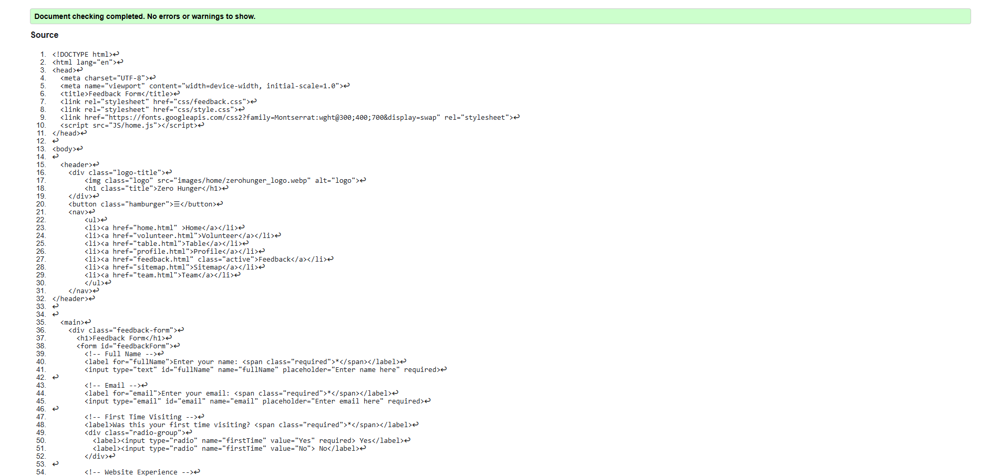
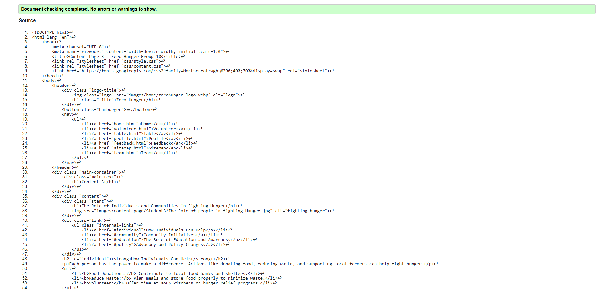

Feedback Page validation report
The validation page ensures all required fields are filled correctly. It checks email format, empty inputs, and numeric ratings. Users receive alerts and visual cues for errors before submission, improving data accuracy and user experience.
Back to Page Editor page
Team Page validation report
The Team page shows the team members Names, Student numbers and there

Back to Page Editor page
Content Page validation report
The content page maintains the same structure as the other pages, ensuring consistency throughout the website.
Back to Page Editor page
Include a link back to the corresponding section of the Page Editor.